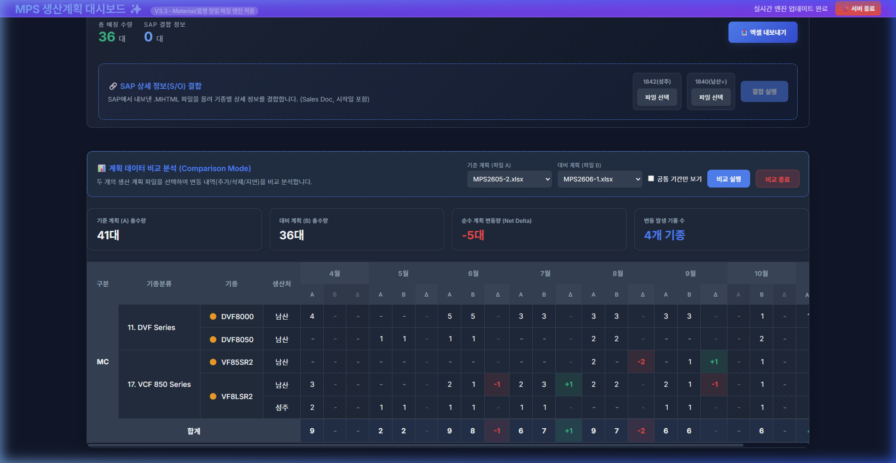
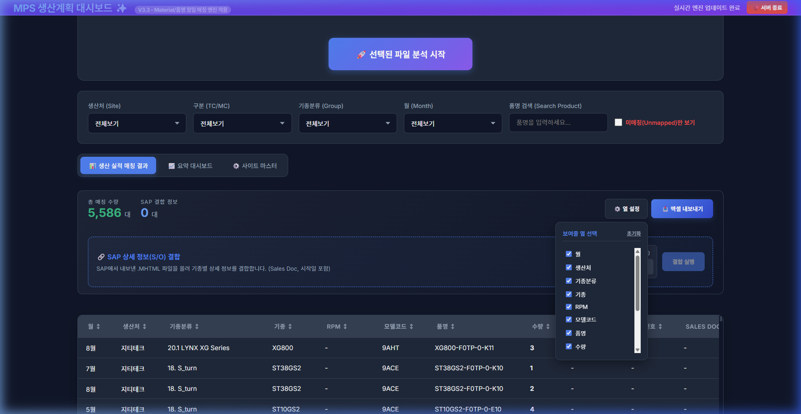
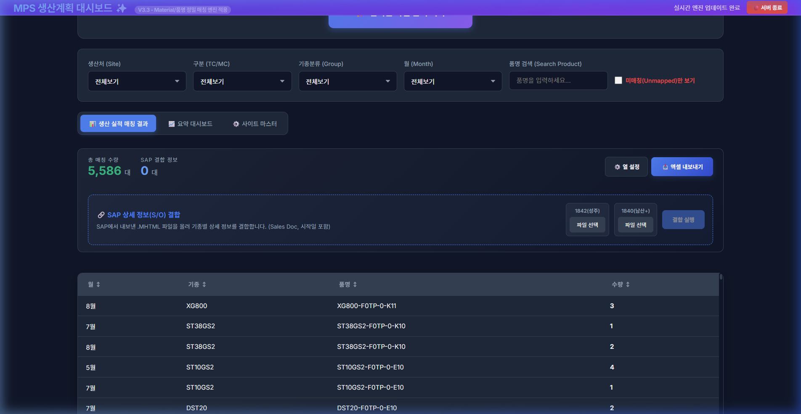

1. 개요
본 문서는 MPS 생산계획 대시보드(v3.3)에 새롭게 추가된 사용자 화면 맞춤 설정(원하는 열 골라보기) 기능과 사용 방법들을 컴퓨터 용어 없이 쉽게 이해할 수 있도록 정리한 가이드입니다.
핵심 업데이트 내용 요약
- 수량 차이(변동량) 계산 방식 개선: 비교 대상 계획표의 기간이 다를 때, 겹치지 않는 달은 불필요한 계산을 제외하여 혼동을 방지합니다.
- 내가 원하는 열만 선택해서 보기 (영구 기억): 보고 싶은 열만 선택해서 볼 수 있으며, 프로그램을 종료했다가 다시 실행하더라도 설정한 상태가 그대로 유지됩니다.
- 화면 상태 그대로 엑셀 저장: 화면에서 숨겨놓은 열은 엑셀 파일로 저장할 때도 자동으로 제외되어 깨끗하게 저장됩니다.
- SAP 주문 상세 정보 결합 기능 탑재: 주문번호, 시작일, 고객명 등을 편리하게 합쳐서 분석할 수 있습니다.
2. 대시보드 사용 전 준비 단계 (MPS 파일 보안 해제 및 업로드 방법)
생산관리팀에서 배포하는 원본 MPS 엑셀 파일은 사내 문서 보안(DRM 등)이 설정되어 있어 프로그램이 직접 문서를 해독하지 못할 수 있습니다. 정상적인 분석을 위해 파일을 업로드하기 전 아래의 순서대로 간단히 보안을 해제해 주십시오.
보안 해제 및 파일 업로드 순서 (3단계)
- 원본 파일 열기: 생산관리팀으로부터 받은 원본 MPS 엑셀 파일을 실행합니다.
- 새 엑셀 파일에 시트 복사하기:
① 키보드 단축키 Ctrl + N을 눌러 완전히 비어있는 새 통합 문서(새 엑셀 창)를 하나 만듭니다.
② 원본 파일에서 '생산배포용' 탭과 'MPS' 탭을 선택(Ctrl 키를 누른 채 마우스로 두 탭을 선택)합니다.
③ 선택한 탭 위에서 마우스 우클릭 후 [이동/복사]를 선택하고, 대상 통합 문서를 방금 생성한 [새 통합 문서]로 지정한 뒤 [복사본 만들기(C)]에 체크하고 [확인]을 누릅니다.
- 저장 후 대시보드에 올리기: 새 창으로 복사된 엑셀 파일을 다른 이름으로 저장(예:
MPS2606-2.xlsx 등)한 뒤, 대시보드 화면의 업로드 영역에 마우스로 끌어다 놓거나 선택하여 분석을 시작합니다.
3. 계획 비교 시 수량 차이(변동량) 계산 방식 수정
서로 계획 기간(달)이 다른 두 생산 계획표(예: 4월~9월 계획표 vs 5월~10월 계획표)를 불러와 서로 비교할 때, 겹치지 않는 바깥 기간(4월 및 10월)은 서로 비교할 수 없으므로 무리한 계산을 방지하도록 수정했습니다.
- 겹치지 않는 달 (4월, 10월 등): 한쪽에만 계획 정보가 존재하는 달은 계산을 건너뛰고, 회색 바탕에 대시(
-) 기호로 보기 좋게 가려서 표시합니다.
- 공통으로 겹치는 달 (5월 ~ 9월): 양쪽 계획표에 모두 들어있는 기간은 계획 수량이 변경되거나 0으로 바뀔 때 변동치(예:
-2 또는 +1)를 정확하게 보여주고 초록/빨강 색상으로 변동을 강조합니다.

그림 1. 4월과 10월 등 공통되지 않은 계획 기간은 차이 계산을 제외하고 회색(-)으로 표시한 화면
4. 나만의 화면 설정 (원하는 열 선택해서 보기)
화면에 표시되는 여러 가지 열(기종분류, RPM, 모델코드 등) 중 불필요한 항목은 숨기고 꼭 필요한 정보만 골라 볼 수 있도록 화면 설정 기능이 추가되었습니다.
설정 보존 기능
내가 설정한 체크박스 정보는 프로그램 실행 폴더 내에 자동으로 기록됩니다. 따라서 창을 끄거나, 웹 브라우저 기록을 지우거나, 컴퓨터를 재부팅하더라도 나만의 설정이 영구적으로 기억됩니다.
- 설정 켜기: 화면 우측 상단의 ⚙️ 열 설정 버튼을 누르면 체크박스 선택 메뉴가 펼쳐집니다.
- 숨기기 및 보이기: 체크박스를 해제하면 해당 열이 화면에서 즉시 사라집니다. 다시 체크하면 원래 자리로 깨끗하게 되돌아옵니다.
- 초기화: 처음 상태로 모든 열을 다 띄우고 싶다면 우측 상단의 초기화 버튼을 누르면 원상복구됩니다.
- 화면 그대로 엑셀 저장: 화면에서 숨겨놓은 항목들은 📥 엑셀 내보내기 버튼을 누를 때 엑셀 시트에서도 자동으로 제외되어 깔끔하게 출력됩니다.

그림 2. ⚙️ 열 설정 버튼 클릭 시 활성화되는 선택 항목 리스트

그림 3. 불필요한 열을 숨겼을 때 화면에 맞춰 자동으로 크기가 조절된 모습 (가로 스크롤바가 생기지 않음)
5. SAP 상세 정보(주문번호/시작일) 결합 방법
생산 실적 결과에 주문번호, Sales Doc(계약서번호), 생산 시작일, 고객명 등 상세 정보를 결합하여 합쳐진 결과를 조회할 수 있습니다.
SAP 데이터 조회 및 다운로드
- SAP 화면 코드: SAP ERP 시스템 검색창에
ZPPM6680 또는 ZPPM6681을 입력하여 실행하고 조회합니다.
- 파일 저장 포맷: 조회 결과 화면에서 데이터를 HTML 웹 페이지 파일 형식(
.mhtml 또는 .html)으로 내보내어 내 컴퓨터에 저장합니다. (저장 시 다운로드된 열의 순서나 모양에 관계없이 프로그램이 자동으로 분석하여 결합하므로, 편하게 다운로드하시면 됩니다.)
- 1842(성주) 결합: 성주 사업장에 해당하는 파일만 별도로 등록하여 결합할 때 사용합니다.
- 1840(남산+) 결합: 성주 사업장을 제외한 남산 등 나머지 모든 생산처의 데이터를 결합하거나 전체 공장의 데이터를 결합하여 비교하고 싶을 때 사용합니다.
- 결합 실행: 두 항목에 맞추어 MHTML 파일을 각각 선택한 다음 우측의 파란색 결합 실행 버튼을 클릭하면 즉시 화면에 정보가 병합되어 나타납니다.
6. 프로그램 실행 방법 및 주의사항
- 프로그램 실행: 제공된 압축파일(
mps_dashboard.zip)의 압축을 풀고 대시보드_실행.bat 또는 1.배경실행_대시보드.bat 파일을 더블클릭하면 백그라운드 서버가 구동되며 웹 페이지가 자동으로 실행됩니다.
- 서버 종료: 웹 브라우저 우측 상단의 🔴 서버 종료 버튼을 누르면 백그라운드 서버가 안전하게 차단됩니다.
- 최초 실행 시 연결 대기: 컴퓨터 사양에 따라 프로그램 서버가 켜지는 속도보다 인터넷 창이 열리는 속도가 더 빠르면 일시적으로 "오류 발생" 문구가 뜰 수 있습니다. 프로그램이 작동을 시작하면 자동으로 재연결을 시도하므로, 새로고침을 누르지 마시고 약 2~3초간 대기하면 정상 화면으로 전환됩니다.
7. 작업 표시줄에 바로가기 아이콘 고정하기 (편의 팁)
프로그램 실행 배치 파일(대시보드_실행.bat)은 Windows 정책상 작업 표시줄에 직접 드래그하여 고정할 수 없습니다. 아래의 간단한 순서를 따라 하시면 작업 표시줄에 고정하여 원클릭으로 실행할 수 있습니다.
- 바탕화면에 바로가기 만들기: 폴더 내의
대시보드_실행.bat 파일에 마우스 우클릭을 한 후, [보내기] ➔ [바탕화면에 바로가기 만들기]를 클릭합니다.
- 바로가기 속성 열기: 바탕화면에 생긴
대시보드_실행.bat - 바로가기 아이콘에 마우스 우클릭을 한 후, 맨 아래 [속성]을 클릭합니다.
- 대상 경로 수정하기: 속성 창의 [바로 가기] 탭에서 [대상(T)] 입력 칸의 맨 앞에
cmd.exe /c 를 추가해 줍니다.
* 예시 (변경 전): "C:\MPS_Folder\대시보드_실행.bat"
* 예시 (변경 후): cmd.exe /c "C:\MPS_Folder\대시보드_실행.bat"
- 아이콘 변경 (선택사항): [바로 가기] 탭 아래의 [아이콘 변경] 버튼을 누른 후, 목록에서 마음에 드는 디자인(예: 모니터 또는 톱니바퀴 모양 등)을 선택하고 [확인]을 누릅니다.
- 작업 표시줄에 고정: 속성 창의 [적용] 및 [확인] 버튼을 눌러 창을 닫은 뒤, 바탕화면의 바로가기 아이콘을 마우스 우클릭하여 [작업 표시줄에 고정]을 누릅니다. (또는 화면 하단의 작업 표시줄 영역으로 직접 드래그하셔도 고정됩니다.)